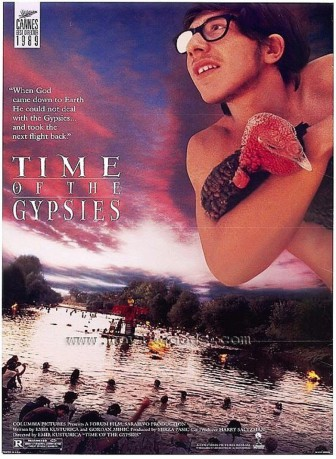

#7573 Die Zeit der Zigeuner
Alternativ: Time of the Gypsies (Englischer Titel)
 
 IMDB-Wertung: 8.3 / 10
IMDB-Wertung: 8.3 / 10  Metascore: 0
Metascore: 0 
Der Zigeunerjunge Perhan wächst nach dem Tod seiner Mutter bei seiner Großmutter Chaditza auf. Er verliebt sich in die hübsche Azra und möchte sie heiraten, doch dafür muss er zunächst zu Geld kommen. Mit ehrlicher Arbeit kommt er nicht weit, weswegen er sich der Bande von Ahmed und seinen Brüdern anschließt, die ihren Lebensunterhalt mit Raub und Zuhälterei verdienen. Nach einiger Zeit hat er kleines Vermögen angehäuft und kehrt nach Hause zurück, wo er von seiner kriminellen Vergangenheit jedoch bald eingeholt wird. Schließlich stellt er fest, dass er selbst der Bestohlene und Betrogene ist.
Jahr: 1988
Dauer: 142 Minuten
FSK: 16
Land: England Studio: Impuls-Film Hans-Joachim Flebbe Co.Tonspuren:
Untertitel: Deutsch,
Auflösung: 1080p (1920x1080) Größe: 10240 MB
Genre: Drama, Komödie, Fantasy, Krimi
Regisseur: Emir Kusturica
Drehbuch: Emir Kusturica
Soundtrack:
Darsteller:
- Branko Djuric als Sadam
- Davor Dujmovic als Perhan
- Bora Todorovic als Ahmed
- Ljubica Adzovic als Khaditza, Grandmother
- Husnija Hasimovic als Merdzan, Uncle
- Sinolicka Trpkova als Azra, girlfriend
- Zabit Memedov als Zabit, neighbor
- Elvira Sali als Danira, sister
- Suada Karisik als Dzamila
- Predrag Lakovic als
- Mirsad Zulic als Zef
- Ajnur Redzepi als Perhan's son
- Sedrije Halim als Ruza, Azra's mother
- Saban Rojan als
- Edin Rizvanovic als
- Marjeta Gregorac als
- Boris Juh als
- Ibro Zulic als
- Advija Redzepi als
- Emir Cerin als
- Irfan Jagli als
- Julijana Demirovic als
- Nazifa Ahmetovic als
- Albert Mumutovic als
- Jadranka Adzovic als
Datei: X:\1988\Zeit der Zigeuner, Die (1988, FSK16, 1920x1080).mkv seit 21.11.2017
Festplatte: HD 1987-1991
 Es gibt insgesamt 66 Filme in der Gruppe '1988'
Es gibt insgesamt 66 Filme in der Gruppe '1988'